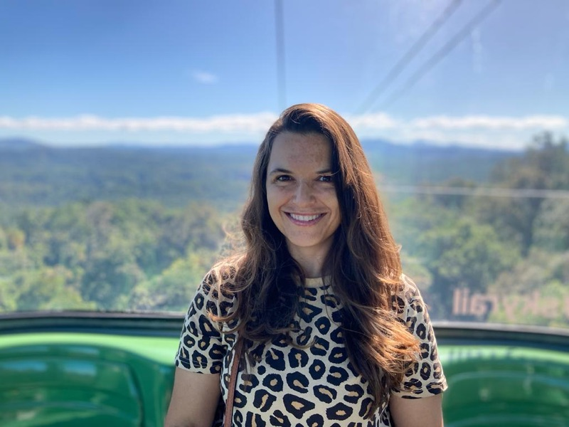

Laura Roldan-Gomez
PhD in Advanced Quantitative Methods, Centre for Computational Social Science, University of Exeter
I study social-ecological systems through network analysis — focused on the relationship between armed conflict in Colombia and deforestation. I'm interested in how human actions, institutions, and ecosystems shape one another.

Latest research
Armed conflict and forest cover in Colombia, 2000–2006
A difference-in-difference analysis of how violence reshapes deforestation patterns.
Recently presented
Australian Social Network Analysis Conference
ASNAC 2024 — and Women in Network Science, 2024.
Photographs
A few favorites — more on Instagram.